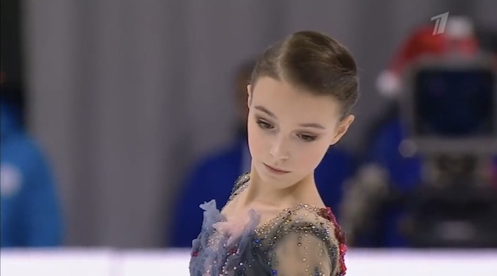
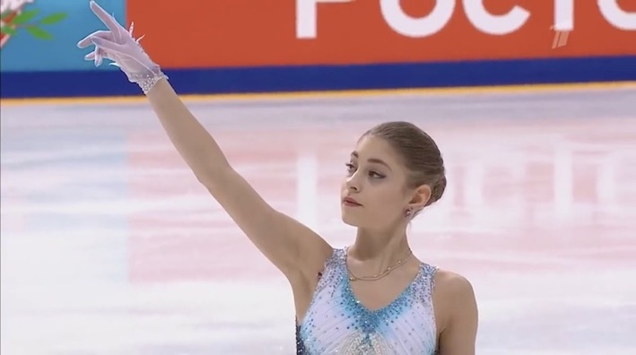
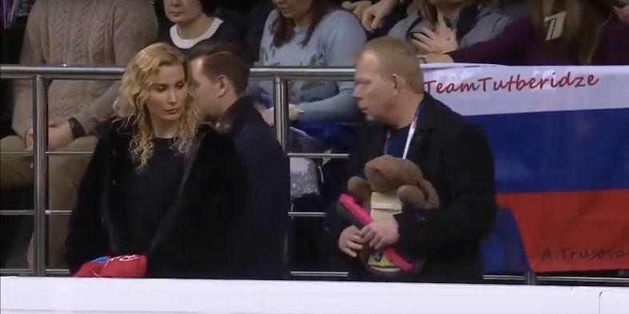
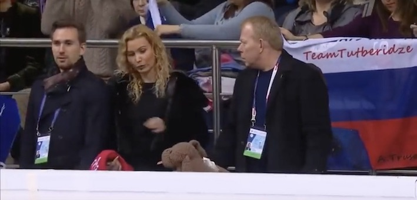
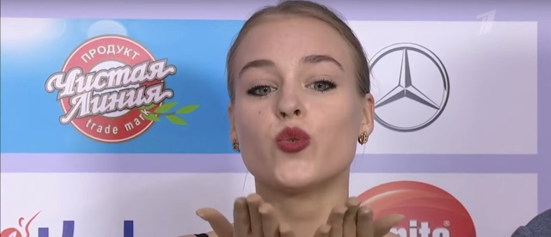
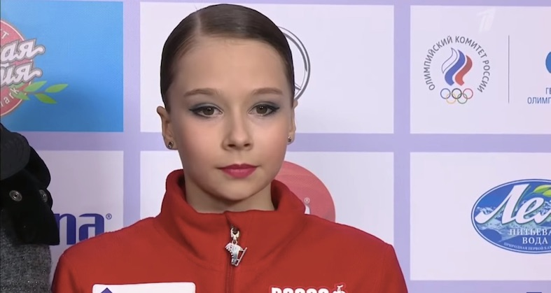

ロシアナショナル女子SP
01/02 2020
category:2020 Russian Figure Skating Championships
あけましておめでとうございます🙇🏻
どうもまにまにです。速度制限から解放されたので、念願の…ロシアナショナル観戦を…
これより感想をつらつらと書いていきますが、書く順番にはさして意味はありません😜
あ、あと、車内にて見ていたので、疲労から感想にムラがあるかもしれません、悪しからず〜
メドさん
TES34.28 PCS36.80 TOTAL71.08
人気すげぇ。靴の件からしてレベルこそ取れなかったにせよ、ジャンプ全て揃えてくるあたりさすがメドさん。ゆっくり休んで来シーズン競技会でかましてくれるの待ってます。
フロロワ
TES36.22 PCS30.23 TOTAL 66.45
所作が凛としている選手ですね。ジャンプ前の動作がやや直線的な印象かなあ。いかにも露女な曲なのにテネルみを感じました。
コンスタさん
TES32.46PCS33.54TOTAL66.00
TLではすっかりおなじみのコンスタさんですがかなりの美人さん。
リプレイで顔芸してるの草ですねぇ。
サハノヴィチ
TES33.31PCS32.11TOTAL65.42
早送りかと見紛う程のスピードで突っ込んでいくジャンプ、見応えがあります。StSq2がなんとも…ですが、ビートを刻むのが上手く、アップテンポな曲を攻略できておりました。
トゥクタミさん
TES41.09 PCS34.65 75.74
かっこいいプログラムでした。ミーシンが大黒天に見えたのはここだけの話。ナショナルなので点はいつもより高い感じですが、点が伸び悩む(と言っても75超)原因もわかった気もします。20を過ぎても挑戦し続ける姿、本当に美しいです。
トゥールギュント
TES41.63 PCS34.83 76.46
相変わらずぞんざいに扱われる2Aかな。衣装チェンジが円滑に行われなかったのは手拍子のせいということで。(冤罪) StSq上手くなってる。上手く言えないけど流れが出てきて、シニアになったんだなぁと。今季イチ好きなトゥールギュントでした。3A待ってます。

シェルたん
TES43.86 PCS36.07 79.93
所作が品。StSq4偉い。体感時間が1番短かったのは彼女でした。指先まで神経の行き届いて繊細で、薄幸な感じが好きです。3Lz3Loをもっとも良く攻略できたのは、トシコの中ではシェルたんですかね。
美
TES51.55(草) PCS38.31 89.96(草)
3Aがあまりにも美。切れ味100%の天使でした。昨季と比べると格段に元気なdepartureです。GOEがオバケ。キスクラの背景のパンダを見てユーリャを思い出しました。
 エテリンの顔面コンディションが良すぎる。やっぱETR48総監督は格が違うな。
グリャコワさん
66.85 TES34.43 PCS32.42
実は見るの初めてです... めっちゃ曲詰めたなあ。忙しい人のためのカルメン。赤い衣装がお綺麗でした。ルッツはエッジエラーぎみ？？？
シュリスカヤ
TES37.54 PCS28.63 TOTAL 66.17
2A綺麗すぎ。15歳初出場。キスクラではシャイな感じでした。
タラライキナ
多分タメ() ヒップヒップ〇〇セカンド2tなっちゃったの惜しかった.
待って何回ヒップヒップて言うの、と仙台帰りの車内で突っ込みました。タラライキナさんまで転倒無しという修羅の場でよく頑張りました。
おサモサも
TES31.30 PCS33.08 64.38
これまたタメ。回転不足の影響でTESが伸び悩みました。エキゾチックな曲がハマる選手で非常にかっこいいです。
たん様 キスクラでは投げキスしていました。可愛い。
TES28.56 32.31 60.87
ブーン、のとこで腕バーンてするのかっこよい。ジャンプは堪えるのが多かったですがそれ以外は噂通りの上手さかと。ルッツの後のトウが遅れたらしい。(解説さん評)
ヌグマノワさん
TES28.49 31.52 60.01
衣装可愛い、シンプルだけどネックレス(？)と手袋の長さの丁度良さが素晴らしい。ジャンプは少し上手く行かなかったですが、ステップは非常に楽しくかったです。あと、お声が可愛い。
グラチョワ
TOTAL56.47
えーん初めてみました。そのまま読めばチェワだとおもってたんですけど、チョワなんだなあ。3F3Loトライでしたが惜しくも失敗。セカンド3Loは壁が高い。。
シニツィナ先輩
TES28.70 32.02 -1 59.72
3F上手すぎ。コンボが無かったのと3Lzが2つの意味で痛かった。。よく滑っていて淀みのなさ。前評判通り非常に上手な選手です。あと可愛い。
ツィビノワ
TES29.83 30.11 -1 58.94
ふたりはクセニア。えーん二人揃ってコンボ。。てかStSq上手すぎね？？コンボ抜けが悔やまれます。劇場型というか、Never Enoughという曲に負けてない動きでした。